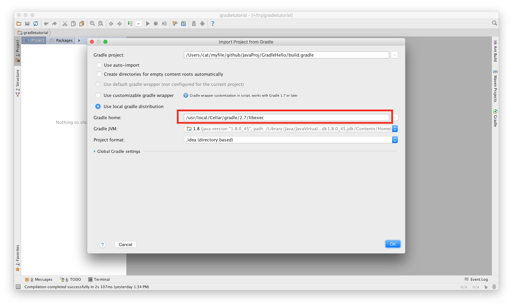

Create Jar file in Java
--------------------------------------------------------------------------------
jar cvf myjar.jar *.class
Understand Java Package CLASSPATH Hell
--------------------------------------------------------------------------------
Package Naming Covention
--------------------------------------------------------------------------------
A package name is made up of the reverse of Internet Domain Name and plus your origanizaton's project name,
separated by '.' Package are in lowercase. For example, suppose your Internet Domain Name is "xfido.com"
and you can name your package as "com.zsurface.project.subproject".
Create Packages
--------------------------------------------------------------------------------
To make the class as part of a package, you have to include the package statement as the first statement in your source file.
Example 1
--------------------------------------------------------------------------------
We shall create a class called MyClass in package com.zsurface. It is a good practice to store the source codes and classes in different directories, to facilitate the distribution of classes without source codes. Suppose that we save the source file as /home/PackageTutorial/src/com/zsurface, and the compiled classes as /home/PackageTutorial/classes/com/xfido.com/MyClass.class. Let write the source as follows:
package com.zsurface;
public class MyClass{
void print(){
System.out.println("MyClass");
}
}
Java Compile, Class, Jar, Package
--------------------------------------------------------------------------------
Specify where to put classes file
javac -d /home/classfile Hello.java
Specify where the class or jar files
javac -cp /home/lib.jar:. hello [MacOS or Linux only]
Java Generate dir from package name
--------------------------------------------------------------------------------
Assume Hello.java is in /myfile/Hello.java
If package com.zsurface inside the Hello.java file
javac -d . Hello.java
Generate a directory and all classes file are in com/zsurface
Hello.java uses Java Jar files from other directory
--------------------------------------------------------------------------------
Jar Path: /Users/cat/myfile/github/JavaLib/Aron.jar
Class Path: /Users/cat/myfile/github/JavaLib/classfile
Aron.jar includes package classpath
Hello.java need to include import classfile.*;
Gradle setup
--------------------------------------------------------------------------------
Install in MacOSX
brew install gradle
gradle will be installed in /usr/loca/Cellar/gradle
Run gradle from command line
gradle
Add gradle to Intellij on MacOSX, Gradle Home in Intellij
